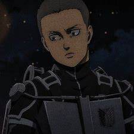

Connie
Connie Springer est membre du 104th Training Corps. Il s’est classé 8e dans la classe et est originaire du village rural de Ragako au sein de Wall Rose, sa plus grande ambition étant de rendre sa famille et son village fiers de lui. Après l’obtention de son diplôme, il rejoint le Survey Corps. Il sert actuellement comme officier dans le Survey Corps.